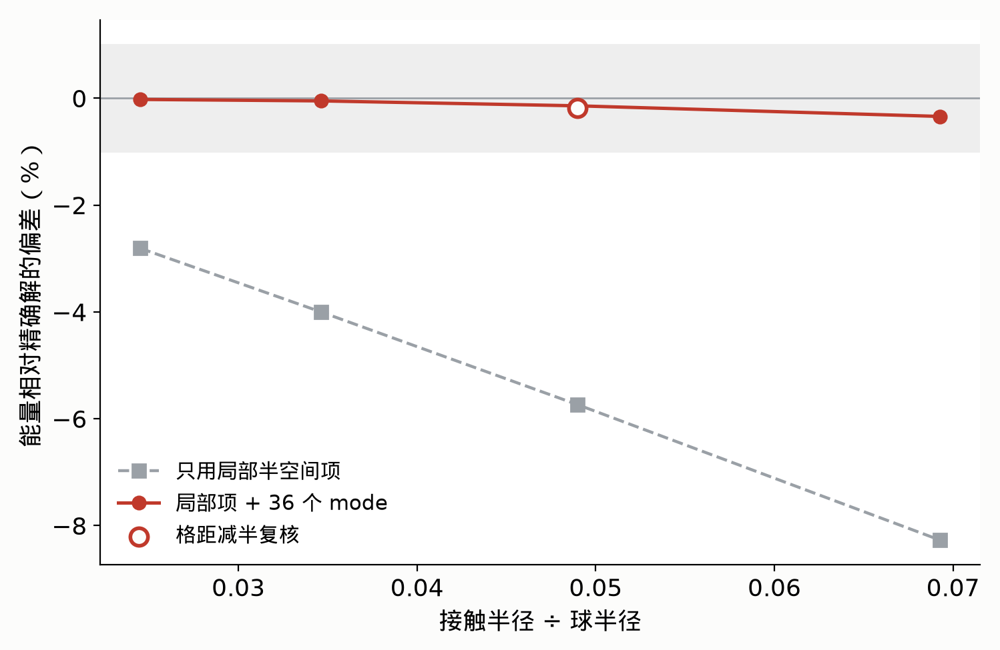
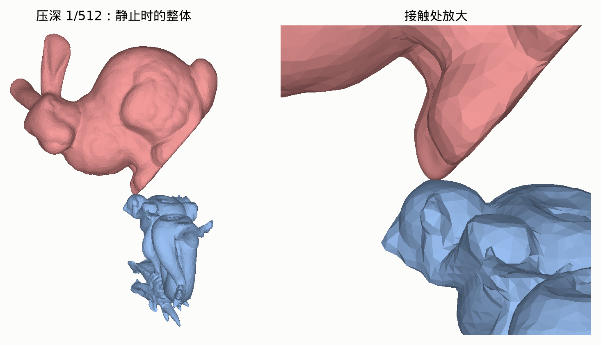
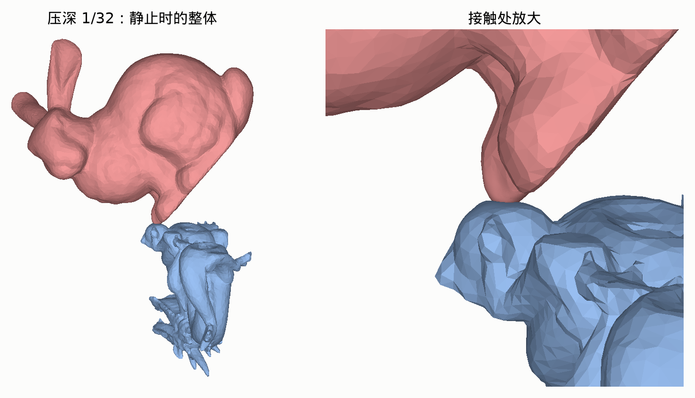
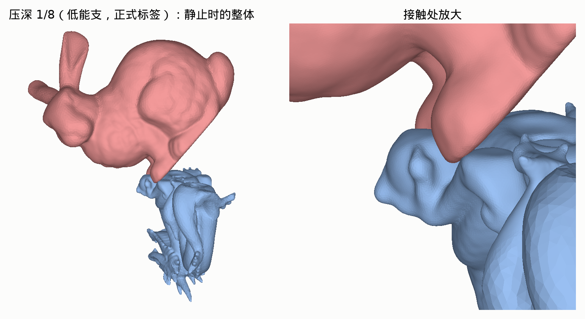
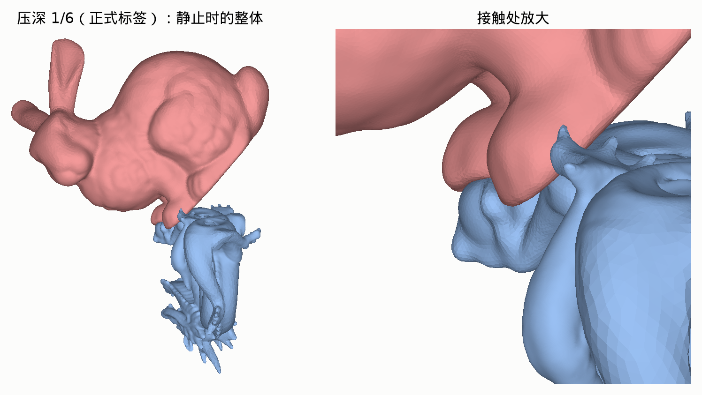
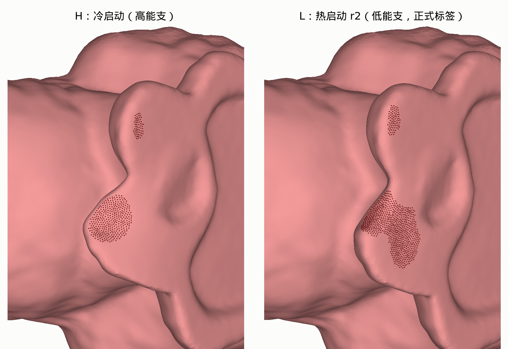
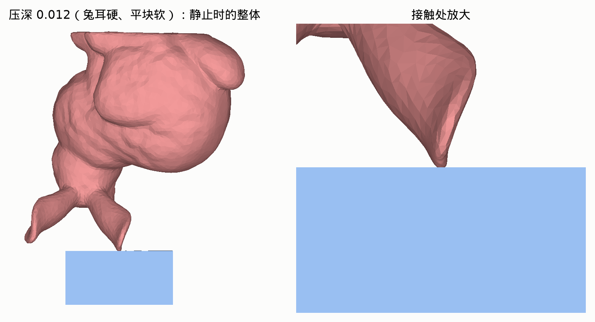
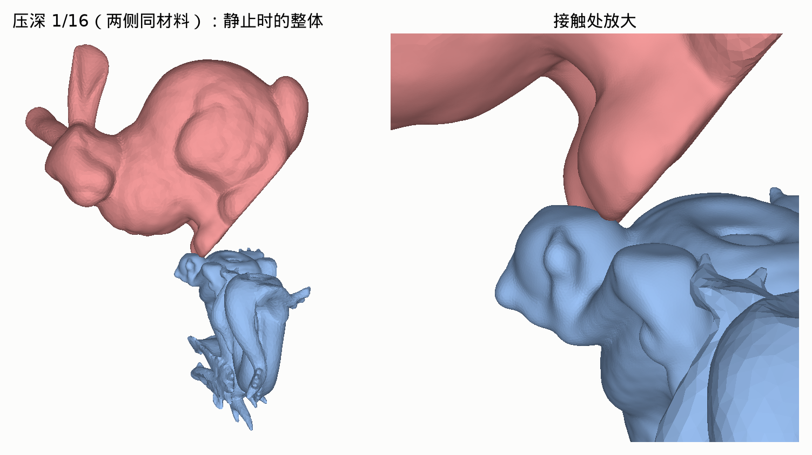
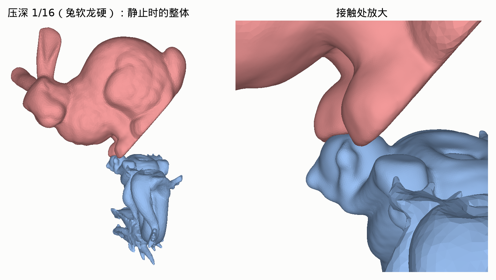
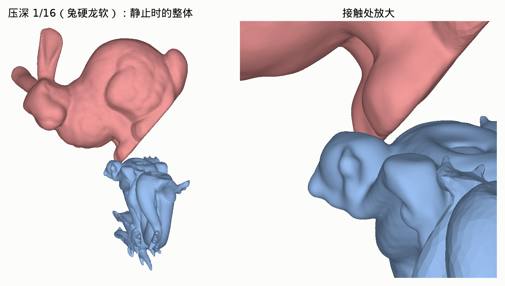

第 7 周：材料、更深的压入、和 baseline 放在一起比
- 上次（第 5–6 周页面）：skeleton = 半空间解析项 + 每个物体预先算好的整体变形 mode，解一个凸二次规划得到接触能量；18 类 edge case 上没有判为明显不对的算例，但都是浅压（最深约物体高度的 1%）。
- 第 1 节是上次组会之后完成的上周工作；本周三件事：① 把已实现的 baseline 列成一张表，每个实验都和它们比（第 2 节）；② 兔子压龙压到兔子高度的 1/16、1/8、1/6，并发现同一个压深有两个静止平衡（第 3、4 节）；③ 两侧材料不同、软硬对调（第 5 节）。RigidFormer 的调研在第 6 节。
本页结论：只认等效模量、只看局部的 baseline（Hertz、半空间、hydroelastic、Winkler、势垒）在中等压深下给出的能量是标准答案的 4.3–21 倍（Hertz、hydro、Winkler；半空间 BEM 只作参考，势垒为无穷大），也分不清软硬对调；有限物体各自的整体柔度决定了压深变大和材料分配下的能量，skeleton 在 1/8 偏硬 11%（参考值），软硬对调的方向对，兔压龙上硬 ÷ 软为 0.293（IPC 0.663）。
1. 上次组会后完成的（上周 TODO）
- skeleton 的正式读法：缝隙和柔度都在两表面的中间面上量。上次的读法在斜面处把沿压入方向量的重叠和沿表面法向的柔度混用，表面越斜偏得越多；新读法按中间面的坡度把两者换算到同一方向，平处与旧读法完全相同。
- 四类有闭式解的小算例全部在 1% 以内（球压平面、倾斜平冲头、两球斜压、V 形槽，各三种格距）：最大是倾斜平冲头 0° 在最粗格上的 −0.69%；格距每减半偏差约减半，最细一档最大约 0.21%。
- 完整 skeleton（局部项 + 36 个 mode）对有限球的精确解只差 −0.02% 到 −0.34%，格距减半复核 −0.19%；只用局部项时偏低 2.8%–8.3%，这部分就是「球有限大、比无限大弹性体硬」，由 mode 补上。

- 普通形状上标签可信的两档（兔子压龙 1/512、1/256），skeleton ÷ IPC 为 0.956、0.983。
- IPC 标签自己有两项偏差，方向都是能量偏高：
- 线性四面体单元偏硬：同网格二次 ÷ 线性单元的能量比，兔子 0.910、0.911，鸭子 0.926，即偏高约 9% 和 7.4%。
- 接触区加密范围不够：把加密区放大到盖住整个接触面后，能量在 1/64 降 0.885%、1/32 降 2.115%、1/16 至少降 3.557%（鸭子 1/256 降 0.897%、1/32 降 2.459%）；1/32 起超过 1%，原网格标签要换网格重出。
- 加密区内按目标边长重划表面，标签只变 +0.178%（边长 0.03）和 +0.296%（边长 0.035），在 0.35% 的判据内，四面体少四成到四成五。第 3 节的中等压深标签就用这种网格。
设置：四类小算例只检验 skeleton 的局部部分，裁判是半空间闭式解；有限球的裁判是整球受力的精确级数解（Titovich & Norris 2012），算例为弹性球压刚性平面、锁 12 个 affine 自由度，接触区小于球半径的 7%。
skeleton 的正式读法在有闭式解的小算例上都在 1% 以内，加上 mode 后对有限球的精确解在 0.35% 以内；IPC 标签的线性单元偏硬约 9%、接触区加密不够的偏差随压深变大，压深变大后的标签改用重划表面的加密网格。
2. baseline：谁在比、各自假设了什么
- 比法：同一个粗状态下，baseline ÷ IPC 标准答案 − 1。正数 = 偏硬（能量偏大），负数 = 偏软。标准答案：精细网格上锁住每个物体的 12 个 affine 自由度（整体平移、转动、拉伸、剪切），其余放开，IPC 跑到静止，读弹性能减去粗模型自己的能量。
| baseline | 做法 | 假设 |
|---|---|---|
| Hertz 点接触 | 只看接触点两侧的曲率，套解析公式 | 两物体都是无限大弹性体、接触区远小于曲率半径 |
| 半空间 BEM | 在整个重叠区上解压力分布 | 两物体都是无限大弹性体 |
| hydroelastic（hydro） | 每个物体内部预设「越深越大」的压力场，在两侧压力相等处积分 | 每点压力只看本地穿入多深 |
| Winkler 弹簧床 | 每个表面点下一根独立弹簧 | 点与点互不影响 |
| 势垒当接触模型 | 把 IPC 防穿透的势垒函数直接当接触能量 | 势垒能就是弹性能 |
\[\color{#c0392b}{U_{\text{Hertz}}=\tfrac{8}{15}\,E^*\sqrt{R}\,\delta^{5/2},\qquad \frac{1}{E^*}=\frac{1-\nu_A^2}{E_A}+\frac{1-\nu_B^2}{E_B}}\]
- \(\delta\)：两物体按刚体算的重叠深度；\(R\)：接触点处的等效曲率半径；\(E\)：杨氏模量；\(\nu\)：泊松比（压扁时往旁边鼓多少）；\(E^*\)：等效模量。\(\delta\) 加倍 → 能量约 5.7 倍（接触区随压深变大）；\(E^*\) 由更软的一侧主导（两侧柔度相加）。
- 成立条件：线弹性、小变形、无摩擦、接触区半径远小于 \(R\)、两物体都当成无限大弹性体。这是 Hertz 的假设，不是我们的；这里只用它说明 baseline 为什么会错。
- 半空间 BEM 与 skeleton 只差一项：两者解同一个二次规划 \(\max_{p\ge0}h^2[p^\top w-\tfrac12p^\top Cp]\)（\(w\) 每格重叠，\(p\) 每格压强，\(h\) 格边长）；半空间 BEM 的柔度 \(C\) 只有无限大弹性体的 \(1/(\pi E^* r)\) 核，skeleton 再加上每个物体自己的整体变形 mode。
- skeleton 是我们之前方法的参照，它的局部项现在仍用半空间（无限厚）柔度，这是已知限制：我们的问题是两个有限物体的接触，局部项下一步要换成有限物体自己的柔度。skeleton 的结果不支持「物体可以当半空间」这一假设，本页它和 IPC 对上或对不上，都只说明当前近似的精度。
- hydro、Winkler、势垒的参数各在「球压平块、很浅」上标定一次，之后固定。势垒标定出的作用距离落在搜索区间的上界 0.5，拟合本身就差；重叠超过这个标定得到的作用距离，势垒能就是无穷大，换成 IPC 标签自己用的安全距离，压深变大后同样是无穷大。
- 本周不比的：Drake、OpenSim、MuJoCo、SOFA 要先安装引擎（前两个与已算的 Hertz、Winkler 同类）；James & Pai、Jain & Liu、Taxim、刚体 / 仿射体直接跑 IPC 没有现成实现；学习类方法要成批多形状标签；RigidFormer 见第 6 节。
| 浅压 28 个够格算例 | 能量误差：中位 / 最大 |
|---|---|
| skeleton（对照） | 0.84% / 5.34% |
| Hertz | 23.5% / 1104% |
| Winkler | 27.2% / 2219% |
| 半空间 BEM | 34.2% / 1474%（28 个全偏硬） |
| hydro | 42.9% / 943% |
| 势垒 | 74.5% / 2314% |
- 五个局部 baseline 在浅压就有两位数误差，最大都出在凹面里压球（整体变形占主导）；半空间 28 个全偏硬，它缺的正是有限物体的整体柔度。
已实现的五个 baseline 都把物体当成无限大或只看局部压入，浅压已有两位数误差；skeleton 与半空间 BEM 只差每个物体自己的整体柔度，后面每个实验都同时报这五列和 skeleton。
3. 中等压深：兔子压龙到高度的 1/6
- 压深 = 兔子向下平移的距离 ÷ 兔子高度（兔子高 9.23）：1/8 = 12.5%，1/6 = 16.7%，属中等压深。只平移，粗模型自己的能量约为 0，\(U\) 就是两物体被对方顶出来的弹性能。
- 这两档的标签用第 1 节的重划表面加密网格：原网格标签在 1/8 偏硬 8.1%、在 1/6 偏硬 8.6%。
压的时候长什么样




压深序列：baseline ÷ IPC − 1
| 压深 | IPC 的 \(U\) | Hertz | hydro | Winkler | 势垒 | 半空间 BEM | skeleton | 半空间 ÷ skeleton |
|---|---|---|---|---|---|---|---|---|
| 1/512 | 0.250 | +97% | −57% | −29% | +40% | +72% | −4.4% | 1.80 |
| 1/256 | 1.21 | +131% | −23% | +27% | ×10 | +107% | −1.7% | 2.10 |
| 1/128 | 5.74 | +177% | +39% | +134% | ×74 | +157% | +2.7% | 2.50 |
| 1/64 | 27.1 | +232% | +137% | +321% | ×550 | +216% | +8.1% | 2.93 |
| 1/32 | 137 | +272% | +245% | +593% | ×3900 | +258% | +10.2% | 3.25 |
| 1/16 | 676 | +326% | +377% | +1062% | ∞ | +312% | +1.8% | 4.05 |
| 1/8 | 3834 | +325% | +349% | +1514% | ∞ | +378% | +2.9% | 4.64 |
| 1/6 | 8520 | +293% | +346% | +1843% | ∞ | +237% | −27.1% | 4.62 |
设置：这张表的标准答案全部取原网格标签，只看随压深的走势；1/8、1/6 的绝对误差以下一张表为准。势垒一列「×」是能量为标签的多少倍，「∞」是重叠超过了该 baseline 标定得到的作用距离 0.5。skeleton 与半空间 BEM 用正式读法（中间面），最后一列是同一状态下「只有半空间项」÷「半空间项 + mode」的能量。1/32 起 skeleton 与半空间 BEM 两列只作参考：原网格标签的接触面超出了加密区，加密区误差在 1/32 实测 2.1%、在 1/16 至少 3.6%，都超过 1%，1/8、1/6 没有实测；1/8 另有 skeleton 的格子没过自动检查。每档的 skeleton 按固定规则选格（先取计数格，没有就取格边长为接触半径 1/8 的格，再没有取最细格），1/32、1/16 两种格之间差 0.06、0.16 个百分点。按高度读法，skeleton 一列依次是 −5.1%、−3.1%、0.0%、+2.0%、−0.3%、−9.3%、−6.7%、−35.9%。
中等压深正式标签：baseline ÷ IPC − 1
| 压深 | IPC 的 \(U\) | Hertz | hydro | Winkler | 势垒 | 半空间 BEM |
|---|---|---|---|---|---|---|
| 1/8（12.5%） | 3545.76 | +360% | +385% | +1637% | ∞ | +417% |
| 1/6（16.7%） | 7844.66 | +330% | +385% | +1999% | ∞ | +266% |
- skeleton 在 1/8 的正式标签上偏硬 11.3%（参考值）；高能支上是 +7.3%（第 4 节）。
设置：两档标签都在加密网格上、从较粗网格的终态出发跑到静止；1/6 另有一条从无接触开始压入的标签（圆柱形加密区网格），\(U\) 7850.37，各 baseline 误差与上表相差不超过 1 个百分点；同一张网格上冷、热启动两个候选能量差 0.007%。半空间 BEM、hydro、skeleton 在原网格的同一锁定目标状态上算（压深分数相同，换算到能量约差 0.4–0.5%），Hertz、Winkler、势垒在各标签自己的状态上算。参考标记：1/8 的 skeleton、半空间 BEM 格子没过自动检查（有的接触区受压格为 0）；1/6 的半空间 BEM 标签接触面超出加密区、加密区误差没有实测。按高度读法，1/8 的 skeleton 为 +0.9%，半空间 BEM 为 +367%（1/8）、+198%（1/6）。
解释
- 局部 baseline 从最浅一档就偏，压得越深偏得越多：Hertz 从 +97% 到 +325%，Winkler 从 −29% 到 +1843%；势垒从 1/16 起重叠（0.58、1.15、1.54）超过它标定得到的作用距离 0.5，能量为无穷大。
- 偏差的来源是有限物体的整体柔度：「半空间 ÷ skeleton」从 1.8 涨到 4.6，即兔子、龙的整体变形把能量压低了 1.8–4.6 倍；无限大弹性体的假设算不到这部分。
- hydro 从偏软变成偏硬：同一组参数在浅压偏软 57%、压深变大后偏硬 3.5 倍，能量随压深涨得比真解快。
- Hertz 远出适用范围：1/8 时接触区半径约为等效曲率半径的 3.5 倍。
- skeleton 在原网格标签上从 −4.4% 走到 +10.2%（1/32）再回到 +1.8%（1/16），1/32 起只作参考；误差随压深变化，不是一个固定系数能修掉的。
压深从 1/512 到 1/6，Hertz、半空间 BEM 的误差从约 +70%–100% 涨到约 +300%，hydro、Winkler 从偏软变成偏硬数倍，原因是有限物体的整体柔度随压深增大；只看局部的 baseline 抓不到这部分。
大压深（高度的 1/3 到 1/2）
4. 同一个压深，两个静止平衡
- 现象：1/8 这一档，同一张网格、同一组 12 个锁定的数，从无接触开始压入（冷启动）和从较粗网格的终态出发（热启动），停在两个不同的静止状态。

| 高能支（冷启动） | 低能支（热启动，正式标签） | |
|---|---|---|
| 弹性能 \(U\) | 3677.55 | 3545.76 |
| 总势能 \(\Pi\)（弹性能 + 接触势垒能） | 3677.57 | 3545.78 |
| 接触合力大小 | 8197 | 10411 |
| 锁定约束下 Hessian 的最低特征值 | 204 | 291 |
- 两支接触落点不同：接触区质心相距 0.43（约为安全距离的 3400 倍），接触顶点 404 对 864，合力方向差 22°；低能支的总势能低 3.6%。
设置：另一张拓扑不同的网格上两支都复现（同一支的能量差 0.26%（高能支）和 0.45%（低能支），两张网格上都是低能支的总势能更低）；特征值一行在那张网格上算。势垒能约 0.02，占总势能约 \(5\times10^{-6}\)。
为什么会有两个平衡
\[\color{#c0392b}{\Pi(x)=\Psi(x)+B(x),\qquad Jx=c,\qquad \nabla\Pi(x^*)=J^\top\mu^*}\]
- \(x\)：两物体全部顶点位置；\(\Psi\)：两物体的 neo-Hookean 弹性能；\(B\)：IPC 的接触势垒能；\(Jx=c\)：每个物体的质心与体积平均变形梯度等于粗模型给的 12 个数（共 24 个约束）。
- 第三式是静止条件：弹性力 + 接触力恰好被锁定力 \(J^\top\mu^*\) 平衡。
-
线弹性、小变形时解唯一；大变形下无穿透的可行区域在弯曲表面上不是凸的，neo-Hookean 能量也不是凸的，所以同一个 \(c\) 可以有多个极小。接触片沿弯曲表面换一处承载，就是从一个极小跨到另一个。
\[\color{#c0392b}{Z^\top\,\nabla^2\Pi(x^*)\,Z\succ 0}\]
-
\(Z\)：满足锁定约束的所有方向；\(\nabla^2\Pi\)：能量的二阶导数矩阵（Hessian）。正定 = 往任何允许的方向挪一点能量都会升高，即严格局部极小，不是鞍点。
- 实测：两支都正定，负主元数恰好等于约束数 24，最低特征值 204 和 291，约为材料尺度 \(\mu/H^2\approx450\) 的一半（\(\mu\) 剪切模量，\(H\) 兔子高度）。两支都是真平衡，不是停早了、网格或势垒造成的假象。
标签取哪一支
- 规则：在算出的候选平衡里取总势能最低的一支；候选至少两类：冷启动、从较粗网格终态出发的热启动。
- 冷启动不能当定义：原网格上的冷启动在第 4000–4500 帧自己从高能支走到低能支（能量降 4.4%），细网格上停在高能支；加载步长减半，冷启动停在同一个点。落在哪支由网格决定。
- 文献：超弹性接触的稳定构型就是能量的局部极小，解的存在性尚无定论（Youett, Sander, Kornhuber 2017），所以只能写「候选中最低」；「固定宏观变形、对其余自由度取下确界」是均匀化里宏观能量的标准定义（Geymonat, Müller, Triantafyllidis 1993），与「锁 12 个数、读能量」结构相同。
- libuipc 开发者在 issue #503 说明：微小数值差异会导致不同的接触对、进而走不同路径，每个结果都在解空间内，不作为 bug 修复。所以多个平衡必须由标签定义处理。
两支上的 baseline
| IPC 的 \(U\) | Hertz | hydro | Winkler | 半空间 BEM | skeleton | |
|---|---|---|---|---|---|---|
| 低能支（正式标签） | 3545.76 | +360% | +385% | +1637% | +417% | +11.3% |
| 高能支 | 3677.55 | +343% | +368% | +1575% | +398% | +7.3% |
- 两支之间 baseline 的误差差别远小于它们本身的误差：Hertz、hydro、半空间 BEM 差 15–20 个百分点（误差本身 +340% 以上）；skeleton 从 +11.3% 变成 +7.3%。
中等压深下同一粗状态有两个都是严格局部极小的静止平衡，总势能相差 3.6%；标签取候选中总势能最低的一支，这个规则跨网格一致，且不依赖从哪里起步。
5. 材料：等效模量相同，软硬对调
- 问题：两个物体一个 \(E=10^6\)、一个 \(10^5\)，再把两者对调。两种分配的 \(E^*\) 相同，只认 \(E^*\) 的模型预测两格能量相同（硬 ÷ 软 = 1）。
-
只认 \(E^*\) 的前提是半空间：两个材料不同的弹性半空间无摩擦接触时，材料只通过 \(E^*\) 出现（Popov, Heß, Willert 2019，式 2.1）。有限物体的柔度按物体分开、各乘各的 \(1/E\)（上次的式子）：
\[\color{#c0392b}{C=\sum_{b\in\{A,B\}}\Big[\frac{1}{E'_b}\,D_bLD_b+\frac{1}{E_b}\,\tilde\Phi_b\Sigma^{(1)}_b\tilde\Phi_b^\top\Big],\qquad E'_b=\frac{E_b}{1-\nu_b^2}}\]
-
第一项是半空间项（\(D_b\) 每格法向余弦，\(L\) 是 \(1/r\) 积分）；第二项是物体 \(b\) 自己的整体变形 mode，按自己的 \(E_b\) 缩放。对调后软的一侧换了，mode 项换到另一个形状上，能量就变了。
浅压：兔耳、兔头压平块（上次的对调，本周跑到判停）

| 硬 ÷ 软 | IPC | skeleton | 半空间 BEM | Hertz | Winkler | 势垒 | hydro |
|---|---|---|---|---|---|---|---|
| 兔耳压平块 | 5.022 | 4.888 | 0.973 | 1.000 | 1.000 | 1.000 | 1.927 |
| 兔头压平块 | 1.109 | 1.072 | 0.993 | 1.000 | 1.000 | 1.000 | 1.885 |
- 兔耳这一组通过网格认证：兔耳网格再加密两档，最细一档相对次细一档的能量变 −0.62%（兔耳软）和 −0.75%（兔耳硬），硬 ÷ 软从 5.082 变到 5.076（−0.13%），在事先定的 1% 判据内。
设置：兔耳两格上次是固定 625 帧的读数；本周从终态续跑到判停（第 628 帧），能量变化不超过 \(6\times10^{-8}\)，硬 ÷ 软 5.022 不变；表里是这一档网格的数。网格认证只加密兔耳，平块网格不变。skeleton 用 19 个 mode，平块一侧只有半空间项。
兔子压龙 1/16（高度的 6.25%）



| \(E\)（兔 / 龙） | IPC 的 \(U\) | 兔子存的能量 | 龙存的能量 | 接触合力 | \(U\) ÷ 同材料 | 合力方向 vs 同材料 | |
|---|---|---|---|---|---|---|---|
| 同材料 | \(10^5\) / \(10^5\) | 652.60 | 191.63 | 460.98 | 2839 | 1.000 | — |
| 兔软龙硬 | \(10^5\) / \(10^6\) | 1382.14 | 1222.64 | 159.50 | 5864 | 2.118 | 51° |
| 兔硬龙软 | \(10^6\) / \(10^5\) | 916.09 | 46.97 | 869.12 | 4217 | 1.404 | 3.9° |
| 兔压龙 1/16 | IPC | skeleton | 半空间 BEM | Hertz | Winkler | 势垒 | hydro |
|---|---|---|---|---|---|---|---|
| 硬 ÷ 软 | 0.663 | 0.293 | 1.001 | 1.000 | 1.000 | 两格都是 ∞ | 2.589 |
| 同材料：÷ IPC − 1 | — | +5.5% | +327% | +341% | +1093% | ∞ | +390% |
| 兔硬：÷ IPC − 1 | — | −7.1% | +453% | +472% | +1446% | ∞ | +1005% |
| 兔软：÷ IPC − 1 | — | +110.2% | +266% | +279% | +924% | ∞ | +183% |
设置：两侧泊松比都是 0.3；对调两格的 \(E^*\) 都是同材料的 1.818 倍。这一批 IPC 用 neo-Hookean，浅压两组用 stable neo-Hookean，只在批内比比值。三格的 IPC 都是从无接触开始压入的结果。skeleton、半空间 BEM 在原网格 1/16 的锁定状态上、换上对调后的材料计算，那里的压深比对调标签大 0.17%，对标签的比值因此约偏大 0.5%，硬 ÷ 软不受影响；skeleton、半空间 BEM 取格边长为接触半径 1/8 的格。正式读法下两侧共用一个中间面法向，所以半空间 BEM 的硬 ÷ 软约为 1。按高度读法，skeleton 为 −6.0%、−15.7%、+69.8%（硬 ÷ 软 0.329），半空间 BEM 硬 ÷ 软 1.223。
解释
- E* 相同、软硬分配相反，IPC 能量差 1.51 倍、合力差 1.39 倍：只认 \(E^*\) 的模型对两格给同一个数（同材料的 1.818 倍），实际一格高 16.5%、一格低 22.8%。每个物体各自的 \(E\) 必须进标签和网络输入。
- 软的一侧存大部分能量，并且可能换接触位置：兔软时兔子占 88%，兔硬时龙占 95%（同材料时龙占 71%）；兔软龙硬一格合力方向变了 51°、接触片大 54%。
- baseline：Hertz、Winkler、势垒、半空间 BEM 分不出（1.000 或 1.001）；hydro 能分出两格，但兔耳幅度只有 IPC 的四成（1.927 对 5.022）、兔头偏大（1.885 对 1.109）、兔压龙方向相反（2.589 对 0.663）。
- skeleton 方向都对：兔耳 4.888 对 5.022、兔头 1.072 对 1.109；兔压龙 0.293 对 0.663，方向相同、偏离 1 更多，兔软一格偏硬 110%（同材料 +5.5%、兔硬 −7.1%）。
- 兔耳、兔头、兔压龙三组的对手物体、压深、本构都不同，硬 ÷ 软方向不同（5.022、1.109、0.663）只并列，不归因于某一项。
等效模量相同时，有限物体的能量仍随软硬分配变化（兔压龙 1.51 倍，兔耳 5 倍），并可能换接触位置；只认 E* 的 baseline 给不出这种差别，skeleton 靠每个物体自己的 mode 跟上了方向，兔压龙上硬 ÷ 软为 0.293，IPC 为 0.663。
6. RigidFormer（ongoing）
- 第 2 周讲过它的方法：点云 → 每个物体一个向量 → Transformer 在物体间交换信息 → 每个物体 4 个锚点的加速度 → 投影成刚体的下一帧位姿。
- 官方代码已公开（MIT 许可，预训练权重和数据集在 Hugging Face），只能在 GPU 上跑。
- 它的输入输出和我们的任务对不上：
| RigidFormer | 我们的任务 | |
|---|---|---|
| 输入 | 每个物体最近两帧点云、质量、摩擦、恢复系数 | 两物体的几何、\(E\)、\(\nu\)、粗状态 |
| 输出 | 下一帧刚体位姿 | 接触能量（和力） |
| 训练数据 | PyBullet 刚体自由运动轨迹 | IPC 静止平衡的弹性能 |
| 变形 | 无（作者列为未来工作） | 局部压陷 + 整体柔度 |
- 不能原样当一列数：没有能量输出，也不吃 \(E\)、\(\nu\)。
- 可行的改造：保留「每个物体点云 → 一个向量 → 物体间注意力」的编码器，输入换成 \(E\)、\(\nu\) 和锁定的粗状态，输出换成接触能量和合力，记为「RigidFormer 编码器改造版」。它需要成批的多形状、多位姿标签才训得动；兔压龙目前是一对形状、一串压深。
RigidFormer 学的是刚体动力学，没有能量输出、不接受杨氏模量和泊松比；作为 baseline 只能借它的物体级编码器改成能量回归，前提是多形状标签。
7. 现在能说什么、下一步
- 能说的：
- 已实现的局部 baseline 在中等压深下给出的能量是标准答案的 4.3–21 倍（Hertz、hydro、Winkler；势垒为无穷大），在软硬对调上要么分不出、要么大小或方向错；原因都是把物体当无限大或只看局部压入。
- 有限物体的整体柔度随压深变大，是压深变大后能量的主要部分（半空间 ÷ skeleton 从 1.8 涨到 4.6）。
- 中等压深下同一粗状态可以有多个严格局部极小，标签取候选中总势能最低的一支。
- 等效模量相同时，软硬分配仍改变能量和接触位置；每个物体的 \(E\) 要分别进输入。
- 下一步：
- skeleton 局部项换成有限物体的柔度，去掉半空间（无限厚）近似。
- 兔压龙软硬对调里 skeleton 硬 ÷ 软 0.293 与 IPC 0.663 之差的来源。
- 往兔子高度的 1/3–1/2 继续压。
- RigidFormer 编码器改造版，等多形状标签。
压深变大和材料分配下，能量由每个有限物体自己的整体柔度决定；只认 E*、只看局部的 baseline 抓不到这一点，skeleton 的结构能抓到，兔压龙对调上与 IPC 的差距是下一步要解释的。